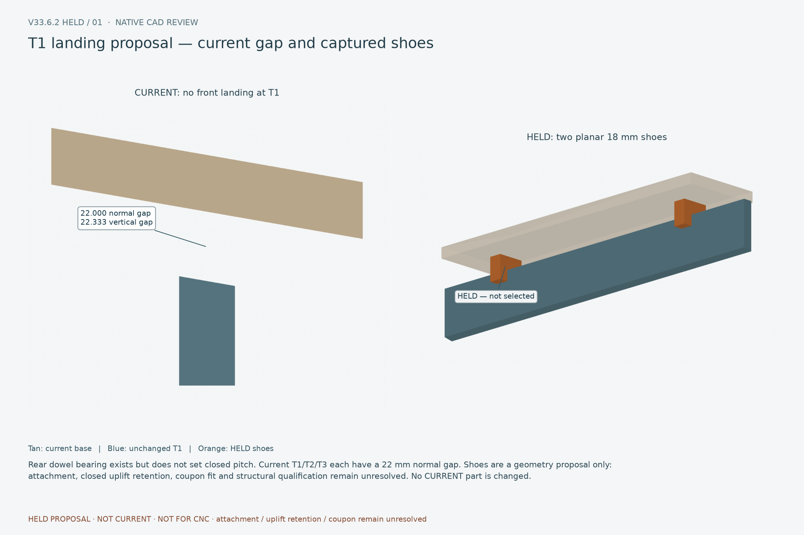
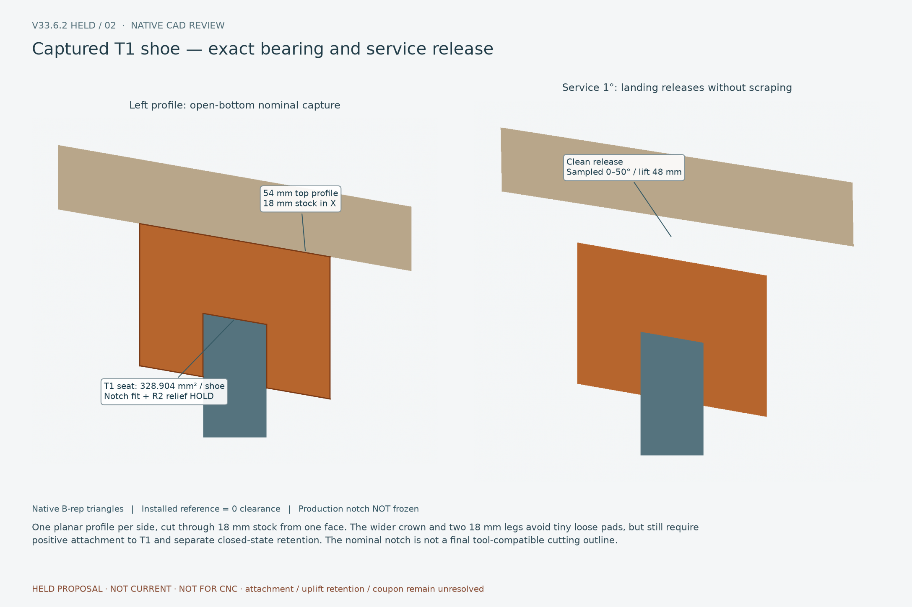

Two native CAD reviews of HELD T1 landing concepts. CURRENT geometry is unchanged. Full-sheet release remains blocked. Report
T1 landing proposal — current gap and captured shoes

Rear dowel bearing exists but does not set closed pitch. Current T1/T2/T3 each have a 22 mm normal gap. Shoes are a geometry proposal only: attachment, closed uplift retention, coupon fit and structural qualification remain unresolved. No CURRENT part is changed.
Captured T1 shoe — exact bearing and service release

One planar profile per side, cut through 18 mm stock from one face. The wider crown and two 18 mm legs avoid tiny loose pads, but still require positive attachment to T1 and separate closed-state retention. The nominal notch is not a final tool-compatible cutting outline.